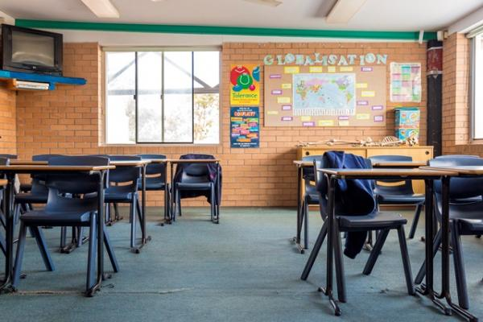

Suicide intervention in schools: data report

Download the evidence summary
Suicide and suicidal thoughts are common among young Australians.
The most recent data shows us that suicide is the leading cause of death for 15-24 year olds.1 Other data tells us that many more young people attempt suicide or consider taking their own lives.2,3 Suicide-related behaviour is associated with a range of negative outcomes, the most obvious, and severe, being death. Further, risk remains high throughout adulthood.
Whilst schools are an obvious and accepted place to run suicide prevention initiatives, there is little evidence to show how effective these programs are. Using funding provided by the Australian Government to develop headspace School Support, our national suicide prevention and postvention support service for secondary schools, we undertook a systematic literature review of the current evidence for suicide interventions in schools. We classified interventions into five categories: universal awareness programs, gatekeeper training, screening programs, indicated interventions and postvention programs.
Universal awareness programs commonly use the school curriculum to deliver interventions and raise awareness to the student body. We identified 15 studies which evaluated universal awareness programs.4–18 Their evidence suggests these programs can increase student knowledge of suicide risk factors and warning signs. They can also encourage students to seek help. However, there are on-going concerns about the negative effects of such programs; some fear that talking with young people about suicide could have an adverse effect on already vulnerable students. To date, no studies have examined the potentially negative effects of such interventions.
Gatekeeper training helps school welfare staff better identify people at risk. It also enables them to provide front-line support and help the at-risk student find further support, such as assessment and treatment. Our review identified 14 studies conducted in school settings;19–30 one of them based in Australia.25 While gatekeeper training programs generally target school welfare staff, two studies aimed to train student peer leaders.23,30 Overall, gatekeeper training was shown to be effective at increasing levels of knowledge among participants, as well as improving their attitudes and confidence. Some programs led to self-reported improvements in practice.
Screening programs focus on the early identification of at-risk people who have not sought help or been identified as needing support. Screening is usually conducted by external professionals and typically involves a two-stage process. In stage one, students are given a brief screening instrument in order to detect who may be at risk. Those deemed to be potentially at risk then proceed to stage two, where an in-depth, face-to-face clinical interview is held. Of the 11 studies into school screening programs which were reviewed,31–41 all but one40 were conducted in the US. Overall, screening programs successfully identified students at risk who wouldn’t otherwise have come forward for help. The studies found that between 4 and 45 percent of screened students were identified as needing further support, with many of them then successfully linked in with either school or community-based services. One study found no evidence that screening students for suicide risk causes undue distress among participants.34
Indicated interventions target people who are already displaying suicidal behaviour (such as expressing suicidal thoughts or attempting suicide). Three studies evaluating a clinical intervention administered in a school setting to at-risk youth were identified in the review.42–44 Although all three studies reported a reduction in suicide-risk behaviour over time, this occurred in both the treatment and comparison groups, with limited effects of intervention. Intervention studies in the field of suicide prevention are lacking, even in clinical settings, and it could be argued that schools are not necessarily the most appropriate setting for delivering and testing indicated interventions to at-risk youth.
Postvention programs are implemented in schools following a student suicide, with the aim of responding to and managing the crisis. They are designed to minimise student distress and reduce the likelihood of further suicides occurring. However, the current review identified only two studies that reported on school-based postvention programs,45–46 offering limited evidence to guide what models of postvention may be most effective.
Conclusions
Overall, the evidence for school-based interventions for suicide prevention and postvention is limited. Research has been hampered by methodological concerns, including a lack of well-designed, controlled studies, and difficulties in accurately and consistently measuring suicide-related outcomes. That said, the evidence does suggest some best bets which, if conducted and evaluated rigorously, could build capacity in the field of suicide prevention and add to the evidence base.
In the absence of robust evidence indicating that suicide awareness programs cause no harm, it is recommended that universal approaches to suicide prevention remain grounded within mental health promotion activities. Reasonable evidence exists to support the implementation of gatekeeper training to school staff and the use of routine mental health screening or check-ups for high school students. These should be done sensitively and include a suicide screen. There is limited evidence regarding indicated approaches to school-based suicide prevention, and indeed questions exist regarding the appropriateness of such interventions. In the absence of appropriate interventions, schools could continue to offer guidance and support to students at-risk, but individual therapeutic interventions should be delivered in a clinical setting.
To date, there is no evidence regarding the effectiveness of postvention activities in schools. While the literature search did identify a number of case studies which described the processes employed following a school suicide, these were not evaluated statistically. Common practices considered to be helpful included: the provision of information and/or support sessions for students, staff and parents; the provision of individual (as opposed to group) support or counselling; scheduled counselling appointments either with school staff or external professionals; consultation with immediate family of the deceased student; and liaising with the media. Because no rigorous evaluation was conducted, the potential effects of these responses, either positive or negative, remain unknown. In the absence of research evidence, schools could look to published toolkits 47 to guide postvention activity in schools.
References
1 Australian Bureau of Statistics. (2008). National Survey of Mental Health and Wellbeing 2007. Canberra, Australia: Australian Bureau of Statistics.
2 Fliege, H., Lee, J. R., Grimm, A., & Klapp, B. F. (2009). Risk factors and correlates of deliberate self-harm behavior: a systematic review. J Psychosom Res, 66(6), 477-493.
3 Johnston, A. K., Pirkis, J. E., & Burgess, P. M. (2009). Suicidal thoughts and behaviours among Australian adults: findings from the 2007 National Survey of Mental Health and Wellbeing. Australian & New Zealand Journal of Psychiatry, 43(7), 635-647.
Universal Awareness Programs
4 Nelson, F. L. (1987). Evaluation of a youth suicide prevention school program. Adolescence, 22(88), 813-825
5 Spirito, A., Overholser, J., Ashworth, S., Morgan, J., & Benedict-Drew, C. (1988). Evaluation of a suicide awareness curriculum for high school students. Journal of the American Academy of Child and Adolescent Psychiatry, 27(6), 705-711
6 Overholser, J. C., Hemstreet, A. H., Spirito, A., & Vyse, S. (1989). Suicide awareness programs in the schools: effects of gender and personal experience. Journal of the American Academy of Child and Adolescent Psychiatry, (6), 925-930
7 Ciffone, J. (1993). Suicide prevention: a classroom presentation to adolescents. Social Work, 38(2), 197-203
8 Klingman, A., & Hochdorf, Z. (1993). Coping with distress and self harm: the impact of a primary prevention program among adolescents. Journal of Adolescence, 16(2), 121-140
9 Orbach, I., & Bar-Joseph, H. (1993). The impact of a suicide prevention program for adolescents on suicidal tendencies, hopelessness, ego identity, and coping. Suicide & Life Threatening Behavior, 23(2), 120-129
10 Kalafat, J., & Elias, M. (1994). An evaluation of a school-based suicide awareness intervention. Suicide & Life-Threatening Behavior, (3), 224-233.
11 LaFromboise, T., & Howard-Pitney, B. (1995). The Zuni life skills development curriculum: Description and evaluation of a suicide prevention program. Journal of Counseling Psychology, 42(4), 479-486
12 Kalafat, J., & Gagliano, C. (1996). The use of simulations to assess the impact of an adolescent suicide response curriculum. Suicide & Life-Threatening Behavior, (4), 359-364.
13 Aseltine, R. H., Jnr, & DeMartino, R. (2004). An outcome evaluation of the SOS Suicide Prevention Program. American Journal Of Public Health, 94(3), 446-451
14 Portzky, G., & van Heeringen, K. (2006). Suicide prevention in adolescents: a controlled study of the effectiveness of a school-based psycho-educational program. Journal of Child Psychology and Psychiatry, and Allied Disciplines, 47(9), 910- 918
15 Aseltine, R. H., Jnr, James, A., Schilling, E. A., & Glanovsky, J. (2007). Evaluating the SOS suicide prevention program: a replication and extension. BMC Public Health, 7, 161.
16 Ciffone, J. (2007). Suicide prevention: an analysis and replication of a curriculum-based high school program. Social Work, 52(1), 41-49
17 Cigularov, K., Chen, P., Thurber, B. W., & Stallones, L. (2008). Investigation of the effectiveness of a school-based suicide education program using three methodological approaches. Psychological Services, 5(3), 262-274
18 King, K. A., Strunk, C. M., & Sorter, M. T. (2011). Preliminary effectiveness of surviving the teens((R)) suicide prevention and depression awareness program on adolescents’ suicidality and self-efficacy in performing help-seeking behaviors. Journal of School Health, 81(9), 581-590 Gatekeeper Training
19 Klingman, A. (1990). Action research notes on developing school staff suicide-awareness training. School Psychology International, 11(2), 133-142
20 Angerstein, G., Linfield-Spindler, S., & Payne, L. (1991). Evaluation of an urban school adolescent suicide program. School Psychology International, 12, 25-48
21 Mackesy-Amiti, M. E., Fendrich, M., Libby, S., Goldenberg, D., & Grossman, J. (1996). Assessment of knowledge gains in proactive training for postvention. Suicide & Life-Threatening Behavior, 26(2), 161-174
22 King, K. A., & Smith, J. (2000). Project SOAR: a training program to increase school counselors’ knowledge and confidence regarding suicide prevention and intervention. The Journal of School Health, 70(10), 402-407
23 Stuart, C., Waalen, J. K., & Haelstromm, E. (2003). Many helping hearts: an evaluation of peer gatekeeper training in suicide risk assessment. Death Studies, 27(4), 321-333
24 Reis, C., & Cornell, D. (2008). An evaluation of suicide gatekeeper training for school counselors and teachers. Professional School Counseling, 11(6), 386-394
25 Robinson, J., Gook, S., Yuen, H., McGorry, P., & Yung, A. (2008). Managing deliberate self-harm in young people: an evaluation of a training program developed for school welfare staff using a longitudinal research design. BMC Psychiatry, 8, 75
26 Wyman, P. A., Brown, C. H., Inman, J., Cross, W., SchmeelkCone, K., Guo, J., et al. (2008). Randomized trial of a gatekeeper program for suicide prevention: 1-year impact on secondary school staff. Journal of Consulting and Clinical Psychology, 76(1), 104-115
27 Tompkins, T. L., Witt, J., & Abraibesh, N. (2009). Does a gatekeeper suicide prevention program work in a school setting? Evaluating training outcome and moderators of effectiveness. Suicide & Life-Threatening Behavior, 39(6), 671- 681
28 Clark, T. R., Matthieu, M. M., Ross, A., & Knox, K. L. (2010). Training outcomes from Samaritans of New York Suicide Awareness and Prevention Programme among communityand school-based staff. British Journal of Social Work, 40(7), 2223-2238
29 Suldo, S., Loker, T., Friedrich, A., Sundman, A., Cunningham, J., Saari, B., et al. (2010). Improving school psychologists’ knowledge and confidence pertinent to suicide prevention through professional development. Journal of Applied School Psychology, 26(3), 177-197
30 Wyman, P. A., Brown, C. H., LoMurray, M., Schmeelk-Cone, K., Petrova, M., Yu, Q., et al. (2010). An outcome evaluation of the Sources of Strength suicide prevention program delivered by adolescent peer leaders in high schools. American Journal of Public Health, 100(9), 1653-1661
Screening Programs
31 Thompson, E. A., & Eggert, L. L. (1999). Using the suicide risk screen to identify suicidal adolescents among potential high school dropouts. Journal of the American Academy of Child and Adolescent Psychiatry, 38(12), 1506-1514
32 Gutierrez, P. M., Watkins, R., & Collura, D. (2004). Suicide risk screening in an urban high school. Suicide & Life-Threatening Behavior, 34(4), 421-428
33 Shaffer, D., Scott, M., Wilcox, H., Maslow, C., Hicks, R., Lucas, C. P., et al. (2004). The Columbia Suicide Screen: validity and reliability of a screen for youth suicide and depression. J Am Acad Child Adolesc Psychiatry, 43(1), 71-79
34 Gould, M. S., Marrocco, F. A., Kleinman, M., Thomas, J. G., Mostkoff, K., Cote, J., et al. (2005). Evaluating iatrogenic risk of youth suicide screening programs: a randomized controlled trial. Journal of the American Medical Association, 293(13), 1635-1643
35 Hallfors, D., Brodish, P. H., Khatapoush, S., Sanchez, V., Cho, H., & Steckler, A. (2006). Feasibility of screening adolescents for suicide risk in “real-world” high school settings. American Journal of Public Health, (2), 282-287
36 Brown, M. M., & Grumet, J. G. (2009). School-based suicide prevention with African American youth in an urban setting. Professional Psychology: Research and Practice, 40, 111-117
37 Gould, M. S., Marrocco, F. A., Hoagwood, K., Kleinman, M., Amakawa, L., & Altschuler, E. (2009). Service use by at-risk youths after school-based suicide screening. Journal of the American Academy of Child and Adolescent Psychiatry, 48(12), 1193-1201
38 Scott, M., Wilcox, H. C., Schonfeld, I. S., Davies, M., Hicks, R. C., Turner, J. B., et al. (2009). School-based screening to identify at-risk students not already known to school professionals: the Columbia suicide screen. American Journal of Public Health, 99(2), 334-339
39 Scott, M., Wilcox, H., Huo, Y., Turner, J. B., Fisher, P., & Shaffer, D. (2010). School-based screening for suicide risk: balancing costs and benefits. American Journal of Public Health, 100(9), 1648-1652
40 de Wilde, E. J., van de Looij, P., Goldschmeding, J., & Hoogeveen, C. (2011). Self-report of suicidal thoughts and behavior vs. school nurse evaluations in Dutch high-school students. Crisis, 32(3), 121-127
41 Husky, M. M., Sheridan, M., McGuire, L., & Olfson, M. (2011). Mental health screening and follow-up care in public high schools. Journal of the American Academy of Child and Adolescent Psychiatry, 50(9), 881-891
Indicated Interventions
42 Eggert, L. L., Thompson, E. A., Herting, J. R., & Nicholas, L. J. (1995). Reducing suicide potential among high-risk youth: tests of a school-based prevention program. Suicide & LifeThreatening Behavior, (2), 276-296
43 Thompson, E. A., Eggert, L. L., Randell, B. P., & Pike, K. C. (2001). Evaluation of indicated suicide risk prevention approaches for potential high school dropouts. American Journal of Public Health, 91(5), 742-752
44 Tang, T.-C., Jou, S.-H., Ko, C.-H., Huang, S.-Y., & Yen, C.-F. (2009). Randomized study of school-based intensive interpersonal psychotherapy for depressed adolescents with suicidal risk and parasuicide behaviors. Psychiatry and Clinical Neurosciences, 63(4), 463-470
Postvention Programs
45 Hazell, P., & Lewin, T. (1993). An Evaluation of Postvention Following Adolescent Suicide. Suicide and Life-Threatening Behavior, 23(2), 101-109
46 Poijula, S., Dyregrov, A., Wahlberg, K. E., & Jokelainen, J. (2001). Reactions to adolescent suicide and crisis intervention in three secondary schools. International Journal of Emergency Mental Health, 3(2), 97-106
47 American Foundation for Suicide Prevention and Suicide Prevention Resource Center. (2011). After a Suicide: A Toolkit for Schools. Newton, MA: Education Development Center, Inc